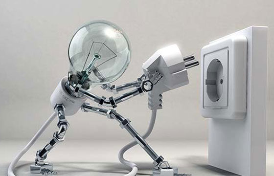

Instalaciones Técnicas JJ Leyva
Quiénes somos
Una empresa donde la satisfacción del cliente es nuestra prioridad.
Especialistas en instalaciones Eléctricas, Fotovoltaicas así como red y datos para oficinas y comercios, etc.
Qué hacemos
- Instalaciones Fotovoltaicas para auto consumo, en viviendas o en casas de campo.
- Mantenimiento integral, informática y microinformática, así como hardware y software.
- Somos especialistas instalaciones eléctricas en todo tipo de viviendas, locales comerciales, comunidades, garajes públicos.
- Estamos certificados por CCNA (Cisco) para la instalación , configuración de cableado de datos, switch, router, puntos AP.
Sobre Nosotros
Somos un equipo de profesionales con más de 10 años de experiencia brindando soluciones tecnológicas innovadoras.